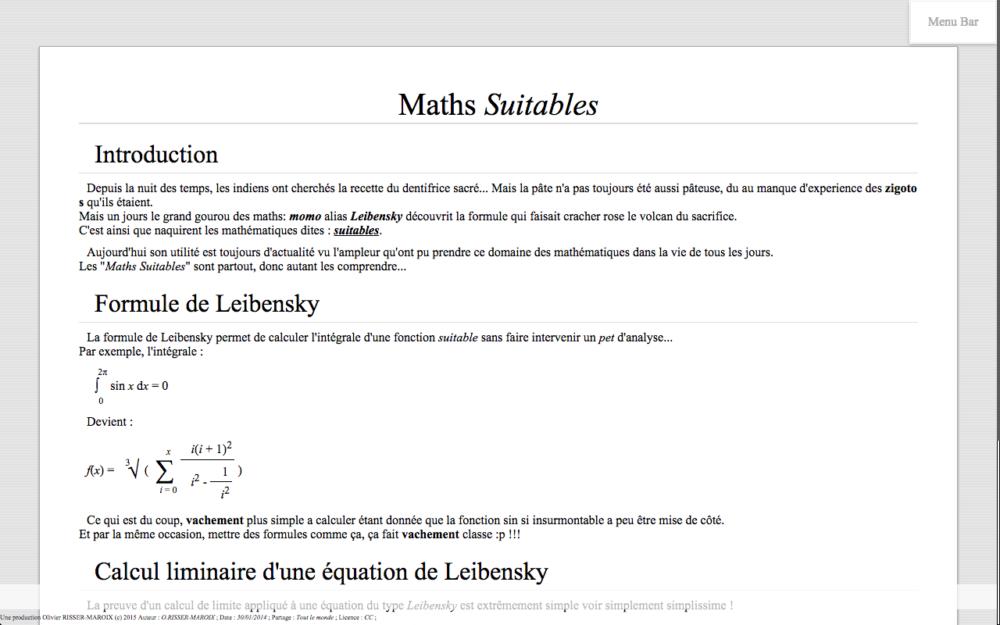

Equipe WALL-E
Marvyn O'Rourke, Olivier RISSER-MAROIX
L'architecture est une application qui permet d'écrire des cours et de les envoyer en ligne à tout le monde.
Voici l'architecture du projet web avec python avec flask :
Après s'être enregistré sur la ppage suivante :
On peut alors tapper des cours sublimes avec un design de folie (autodérision... :p)

On a même un super click droit :
En en selectionnant des mots, en bas une liste de liens vers wikipedia eest affichée pour pouvoir en savoir plus :